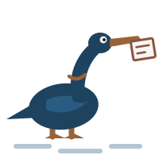
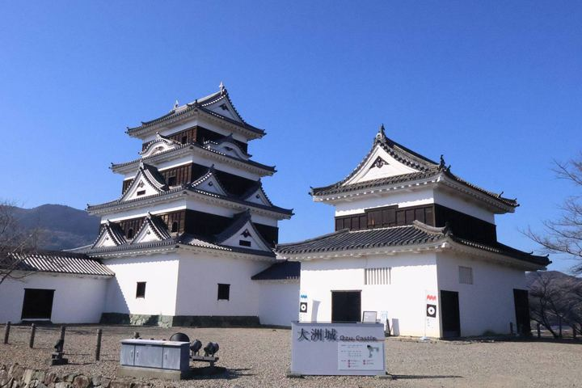
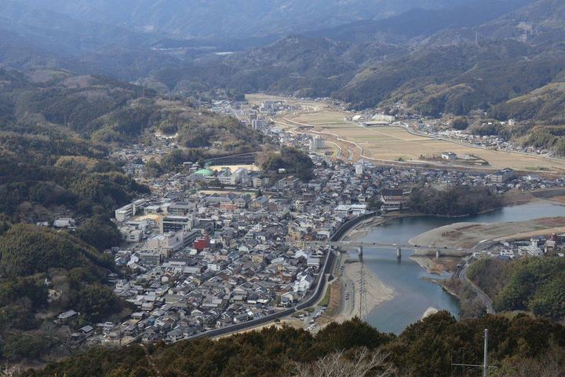
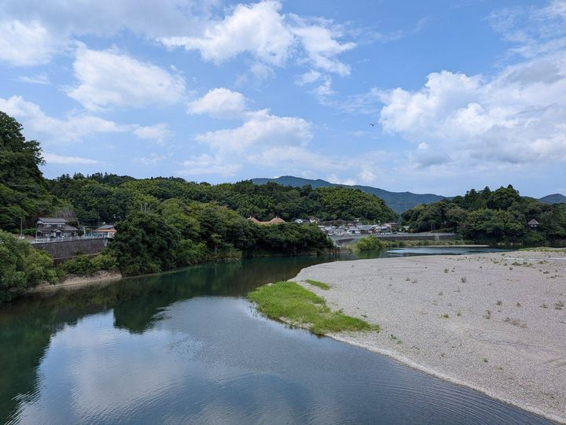
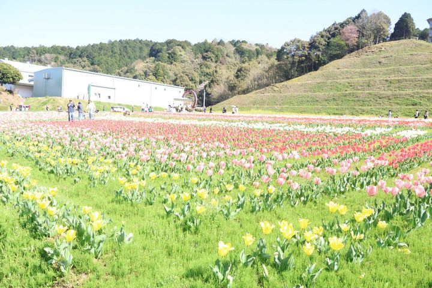
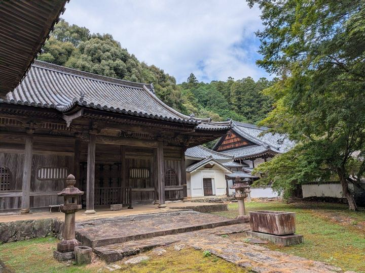
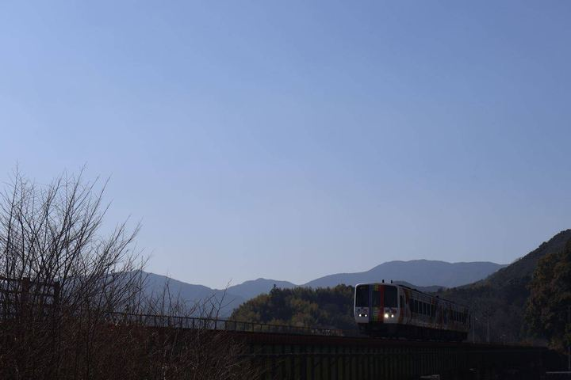
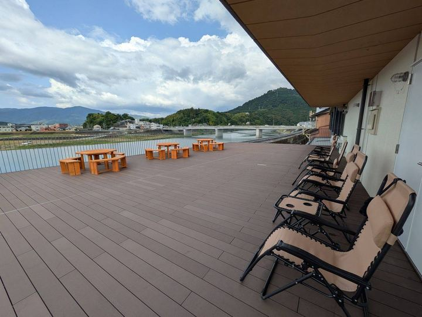
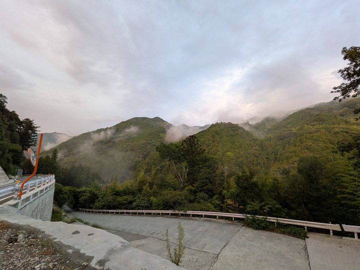

暮らしの節目ごとに、どの記事をどの順に読めばよいかをまとめた手引きです。
「こんなときは」の一覧を見る
運営者のおすすめ記事10選を見る
掲載日ではなく、参照した資料そのものの日付が新しい順に並べています。
記事の一覧をすべて見る
1本の記事に収めるにはもったいない題材を、時間のあるときにじっくり読んでもらうための長文コーナーです。 出典を並べて、分からなかったことも正直に書いています。
「大洲の自由研究」の一覧を見る
全293記事につけたテーマタグです。かっこ内は記事数。
記事で使っている写真は、すべて市内で自分で撮ったものです。自由に使える形で公開しています。








フリー写真のページを見る
サイトの入口(文字だけの一覧)